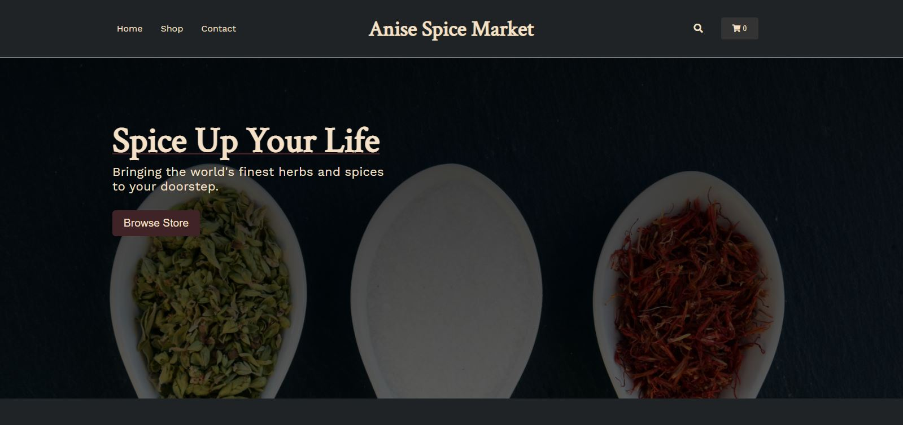
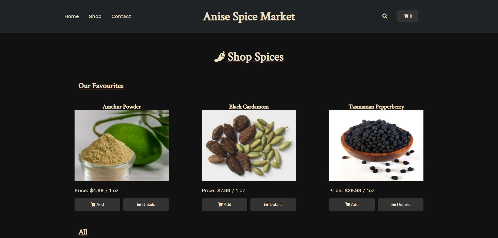

My biggest project to date started today with an e-commerce project for the fictional Anise Spice Market.
Today was spent entirely on getting the e-commerce project setup, beginning the homepage styles and layout, and then working on the shop page. Although I was a little worried about the complexity of this project before I started, once I got moving it seemed to flow along just fine. I was able to get the homepage up in no time, and made quite a bit more progress with the shop page than I had expected - getting to the point where item objects are pulled in from a JSON file and rendering dynamically, and somewhat happy with the design so far.
One thing (among many!) I need to work on is focusing on polishing up the designs more for my projects. With most of them so far the past 35 days, I have left them functionally complete, but havn't spent the extra time to really tidy up the UI design. I think that for the next few projects in the JS track, e-commerce shop included, I will plan to spend the extra few hours (or even a couple dedicated days) to try to make them more portfolio-worthy, without looking amateurish. I am pretty sure I know the CSS needed to make this happen, and in general just have been letting small design bells and whistles slide in the interest of pushing forward. Today I started consulting Dribble for design inspiration, and that greatly influence the two pages shown below.
Next steps for tomorrow: Add to cart functionality, cart layout and totals, item details page
Here is a screenshot of the Anise Spice Market's home page:
Here is a screenshot of the shop's main page:
